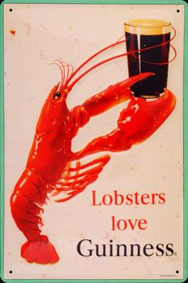

Hey there, I'm Bella. I'm a designer currently based in Bellingham, WA with a keen interest in illustration and lettering. I've done freelance work for roughly 3 years, and enjoyed being the illustrator for one of Western Washington University's publications. Being able to learn from others, develop my personal style, and find new ways to implement creativity in my life are just some of the things I love about working in design.
Outside of the design world, you can find me listening to my favorite band Ghost, collecting trinkets, and doodling on any piece of paper I can find.